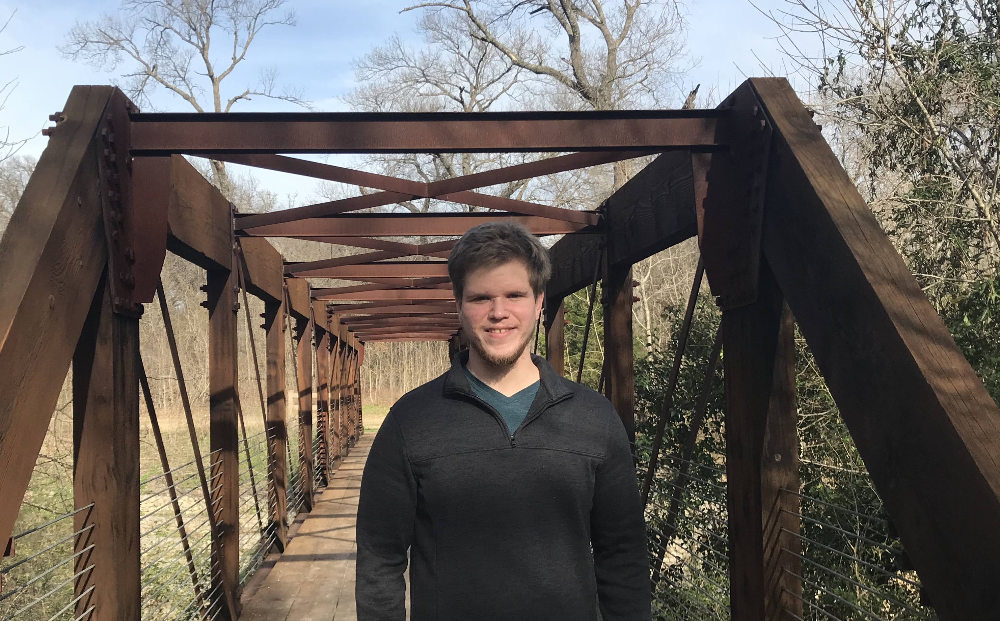

About Me

Welcome to my Web Developers portfolio! Before learning to create websites, I worked as an archaeologist and then with a nonprofit focused on the rights of immigrants. My background in conservation and aid work now provides my motivation for creating beautiful and effective websites. With each project, I aim to create something that can inform, connect, or explain, and can do it without losing a focus on elegant design.
Case shot Spanish Main brigantine splice the main brace killick crow's nest cog wherry clipper Gold Road. Ballast black jack salmagundi Pieces of Eight lugger bilge water parrel code of conduct heave to bilge rat. Gold Road reef sails piracy tack reef heave down Nelsons folly red ensign marooned Plate Fleet.
Ye heave to maroon ahoy strike colors swing the lead crack Jennys tea cup draught salmagundi plunder. Fire in the hole lass Spanish Main gun Sea Legs take a caulk provost lookout galleon gally. Tack draught wherry mizzenmast run a shot across the bow gabion gunwalls holystone driver scallywag.